계약서 PDF 한 건을 넣으면 기능 정의부터 클릭이 되는 HTML 시안 · 화면별 기획서 · 테스트케이스 · 고객사 코멘트 영역까지 한 번에 만들어 링크로 전달합니다.
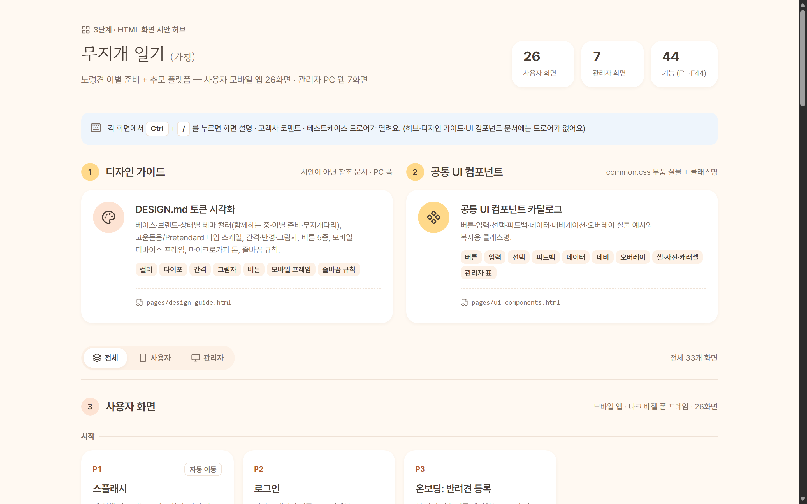
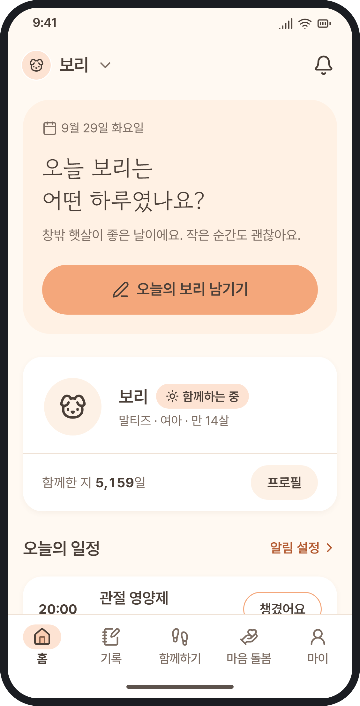
시안 허브 · 사용자 화면 — 가상 예시 프로젝트 「무지개 일기」로 생성한 결과물입니다. 전체 화면과 화면별 기획서는 ramseok.github.io/prd-demo 에서 볼 수 있습니다.
1~2주 → 1시간
착수 기획 초안 작성 30분~1시간 내외로 단축
4종 → 1곳
기획서 · 디자인 가이드 피드백 · 테스트케이스 통합
직접 클릭 검토
고객사가 기획서를 펼친 채 화면을 직접 눌러 확인
HTML · CSS 인계
실제 마크업 위에서 개발 착수
Role
설계 · 구축 · 운영
Period
2026.06 — 운영 중
Stack
Claude Code · 에이전트 9종 Supabase · Netlify · Vercel
PROJECT 01
PRD Toolkit
계약서 → 기획서 · 화면 시안 자동 생성
이 장의 화면에 대하여
실제 고객사 프로젝트의 기획서는 비밀유지 대상이라 첨부할 수 없습니다. 이어지는 산출물은 모두
가상의 예시 프로젝트 「무지개 일기(가칭)」를 파이프라인에 넣어 생성한 결과물입니다. 도구의 동작과 결과물 형태를 보여주기 위한 것이며, 특정 고객사의 내용이 아닙니다. 전체 산출물은 ramseok.github.io/prd-demo 에서 직접 열어볼 수 있습니다.
화면 확인용으로 정적 HTML만 공개한 것이라 실제 서버 배포와 DB 연동은 되어 있지 않습니다.
문제
Figma로 화면을 한 장씩 그려 초안까지 1~2주
1명이 여러 프로젝트를 병렬로 맡는 구조라 기획에 일정 · 공수가 몰려 전체 일정의 병목 발생
기획서 · 디자인 가이드 · 고객 피드백 · 테스트케이스가 서로 다른 문서로 파편화
피드백이 어느 화면 · 어느 항목 얘기인지 매번 다시 대조
해결
계약서 PDF를 출발점으로 기능 정의 → 페이지 맵 → HTML 시안 → 화면별 기획서 · 테스트케이스까지 한 번에 생성
동작하는 HTML 시안 — 버튼 클릭 · 페이지 이동이 실제로 되는 화면
리뷰 레이어 — Ctrl + / 로 화면별 기획서 · 고객 코멘트 · 테스트케이스를 한 패널에
디자인 · 컴포넌트 가이드 — DESIGN.md 토큰으로 전 화면 통일
품질 게이트 — 생성과 검토를 분리, 내용 기준으로 완료 판정
링크 전달 — 자동 배포 후 링크 하나로 공유, 피드백은 DB에 기록
성과
파편화된 문서 4종 → 링크 1개 — 기획 · 디자인 · 피드백 · 테스트를 한 곳에서 진행
아래는 위 흐름의 04~05단계 산출물입니다. 가상의 프로젝트라 실제 서버 배포와 DB 연동은 되어 있지 않아 로그인 · 저장 같은 기능은 동작하지 않고,
코멘트 · 테스트케이스 결과는 보고 있는 브라우저에만 임시로 남습니다. 시안 화면에서 Ctrl + / 를 누르면 그 화면의 기획서가 열립니다.
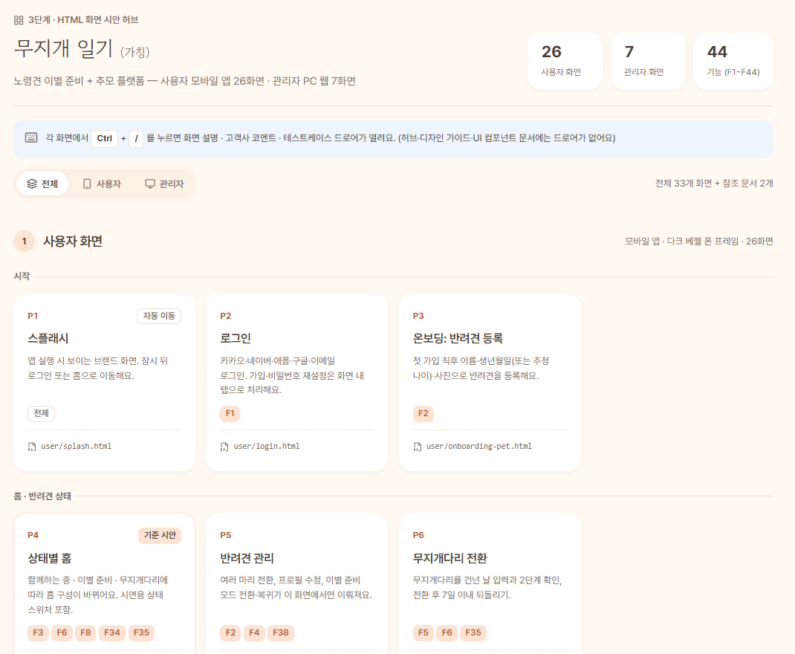
산출물시안 허브 — 예시 프로젝트 한 건에서 사용자 화면 26 · 관리자 화면 7 · 기능 44개(F1~F44)가 생성됐습니다.
화면 카드마다 설명과 관련 기능 번호, 실제 파일 경로가 함께 붙어 기능과 화면이 1:1로 대응됩니다. 상단 안내처럼 모든 화면에서 Ctrl + / 로 리뷰 패널이 열립니다.
단계마다 역할이 다른 전담 에이전트 9종을 두고, 계약 해석처럼 판단이 무거운 일과 화면 양산, 기계적 검사에 각각 다른 모델을 배치해 비용과 속도를 맞췄습니다.
상위 산출물이 수정되면 하위 단계의 검토 상태가 자동으로 무효화돼 문서 간 어긋남을 막습니다.
PRD Toolkit · 가상 예시 프로젝트
05
PRD TOOLKIT · 산출물 02
화면을 보면서 그 화면의 기획서를
화면별 기획서
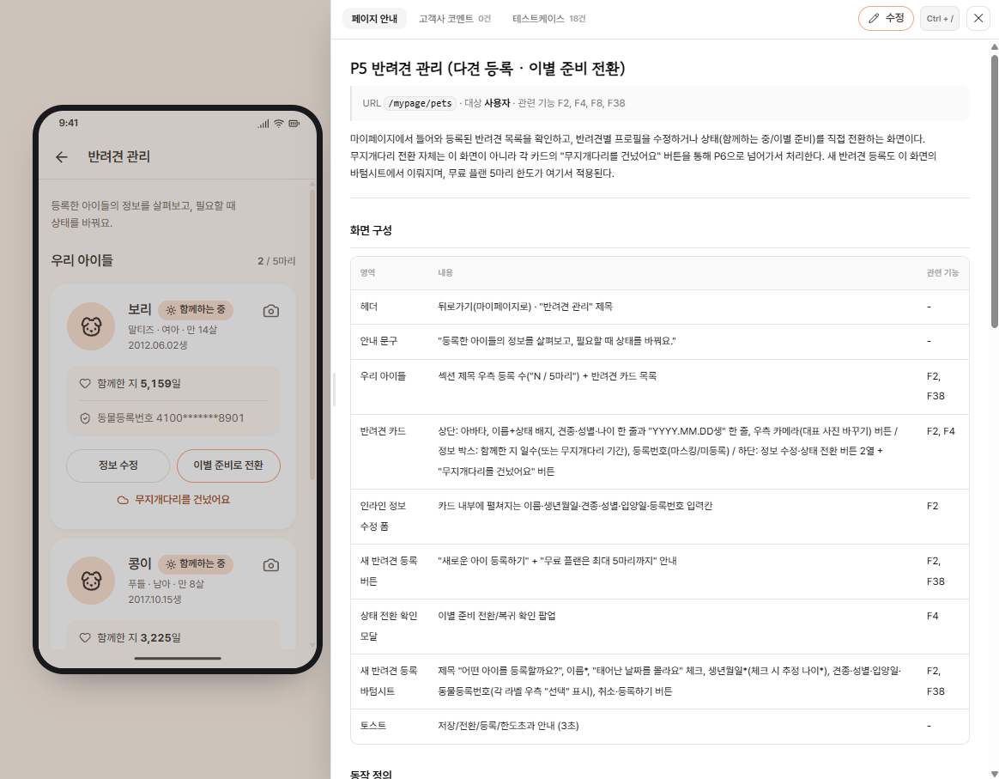
산출물화면별 기획서 — 왼쪽은 클릭과 페이지 이동이 실제로 동작하는 시안, 오른쪽은 Ctrl + / 로 열리는 패널입니다.
URL · 대상 · 관련 기능이 머리에 오고, 화면 구성은 영역 · 내용 · 관련 기능 표로 정리됩니다. 개발팀이 그대로 읽는 문서입니다.
기획서와 시안을 따로 보내면 고객사는 두 문서를 번갈아 맞춰 봐야 했습니다.
지금은 보고 있는 화면이 곧 문서의 기준점이라, "어느 화면의 어느 항목"을 설명하는 데 드는 대화가 사라졌습니다.
PRD Toolkit · 가상 예시 프로젝트
06
PRD TOOLKIT · 산출물 03–04
검수와 피드백을 도구 안으로
테스트케이스 · 고객사 코멘트
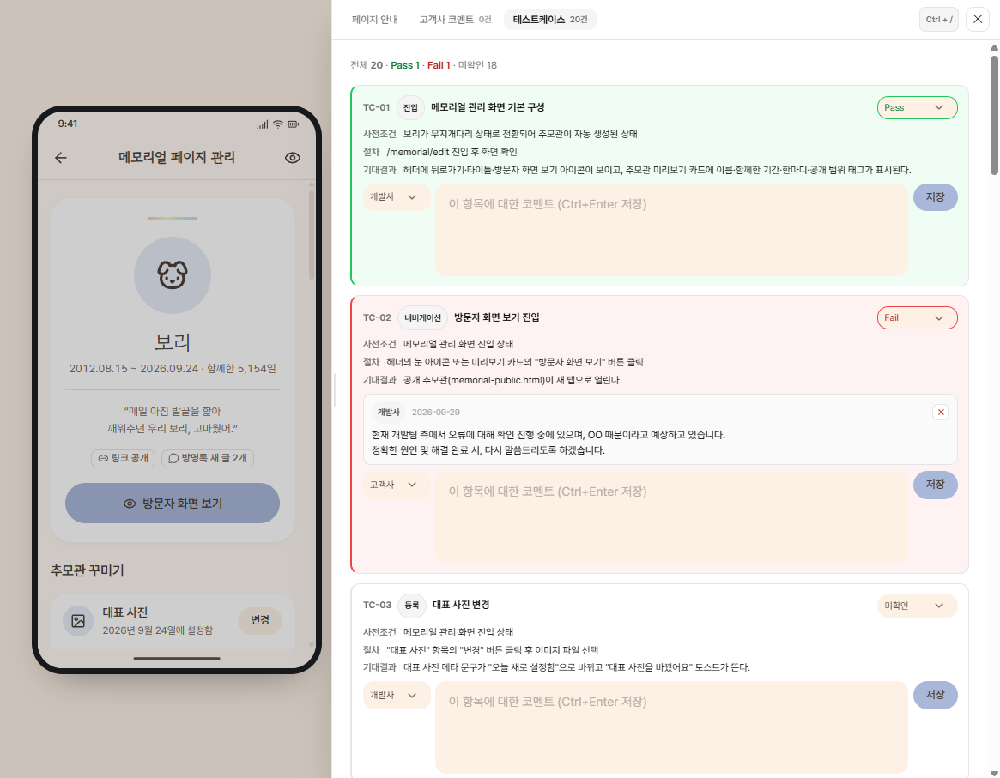
산출물테스트케이스 — 사전조건 · 절차 · 기대결과가 화면 단위로 붙고 Pass · Fail · 미확인 상태를 그 자리에서 바꿉니다. Fail 항목에는 개발사와 고객사가 각각 코멘트를 남깁니다.
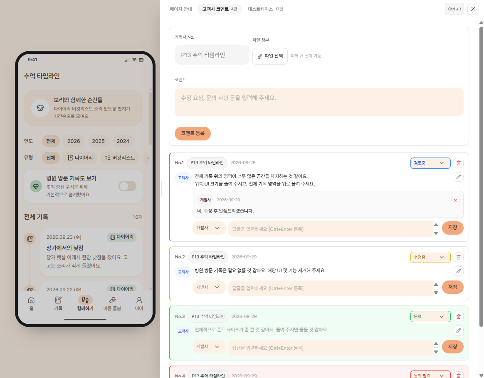
산출물고객사 코멘트 — 고객사가 화면을 보면서 바로 수정 요청을 남기고 개발사가 답글을 답니다. 각 건은 검토중 · 수정중 · 완료 · 논의 필요로 관리되고 파일도 첨부됩니다.
PRD Toolkit · 가상 예시 프로젝트
07
PRD TOOLKIT · 산출물 05–06
운영 화면과 디자인 기준까지
관리자 시안 · 디자인 가이드
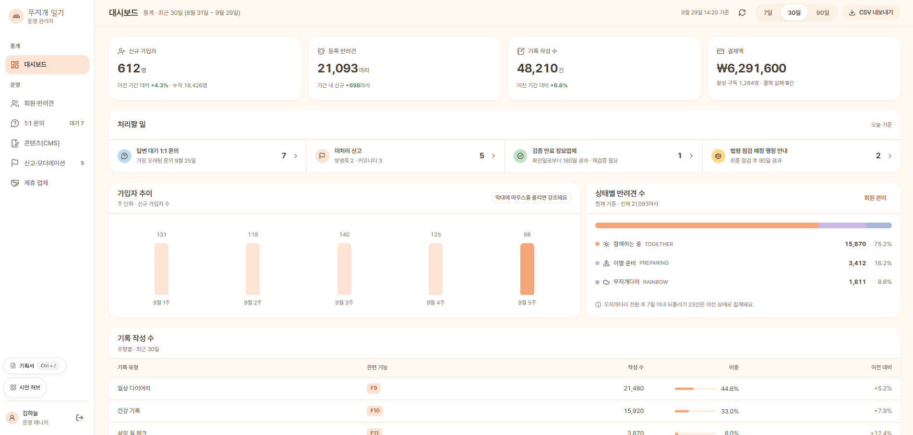
산출물관리자 대시보드 시안 — 사용자 화면뿐 아니라 운영자가 보는 화면까지 생성됩니다. 지표 카드 · 처리할 일 · 추이 그래프 · 상태별 분포를 구성해
운영자가 무엇을 보고 무엇을 처리하는지를 화면으로 합의합니다. (표시된 수치는 예시값)
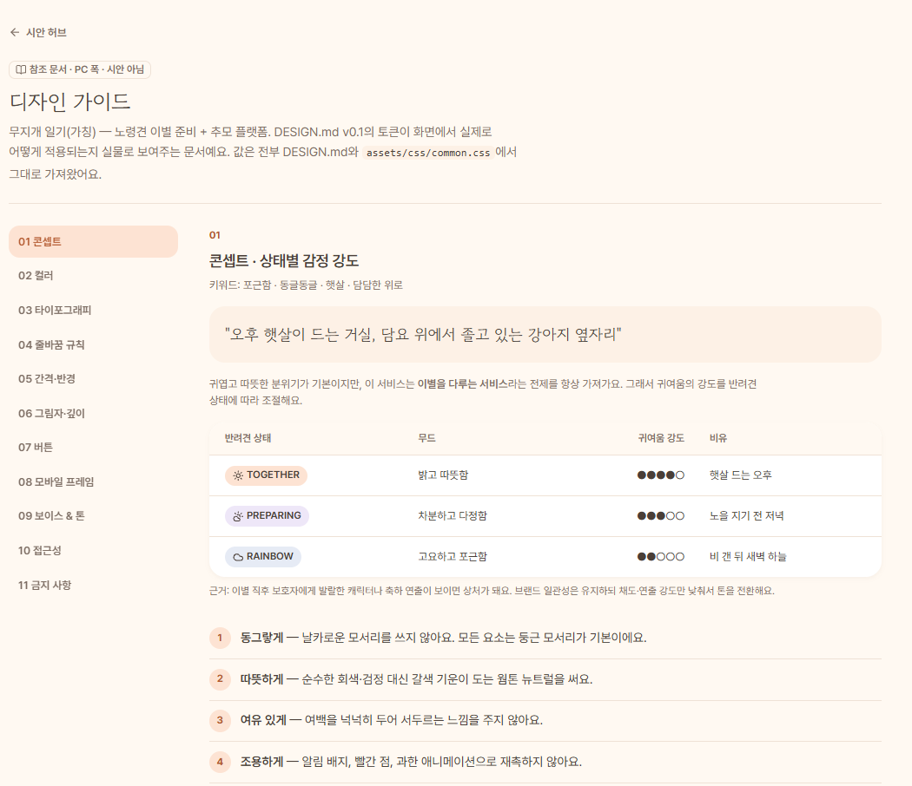
산출물디자인 가이드 — 고객사 디자인 요구사항과 레퍼런스를 DESIGN.md의 토큰으로 정리하고, 그 값이 화면에 실제로 어떻게 적용되는지 실물로 보여주는 문서입니다.
콘셉트 · 컬러 · 타이포 · 버튼 · 접근성 · 금지 사항까지 11개 절로 고정해 주관적 피드백으로 되돌아가는 재작업을 줄입니다.
PRD Toolkit · 가상 예시 프로젝트
08
Project 0210 — 17
02
PM Station
흩어져 있던 마감 · 회신 대기 · 정기 업무를 한 화면에 모으고, 챙겨야 할 일을 정해진 시간에 먼저 알려 주는 사내 업무 시스템입니다.
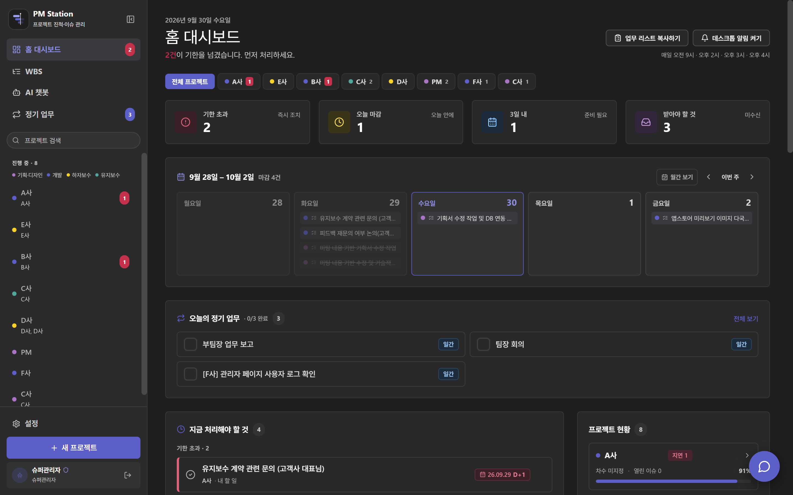
홈 대시보드 — 실제 운영 중인 화면입니다. 기한 초과 · 오늘 마감 · 3일 내 · 받아야 할 것으로 자동 분류되고, 고객사명은 A사 · B사로 치환했습니다.
4곳 → 1곳
업무 확인 경로 메신저 · 엑셀 · 메모 · 문서
매일 08:10
운영 보고서 자동 발행 지표 12개 · 조치 필요 · PDF
20분 → 1분
회의록 1건 작성 (15~20분 → 1분 내외) 녹음 · 텍스트로 초안 자동 생성
Role
기획 · 설계 · 검증 · 운영 (구현은 AI 개발 도구 활용)
Period
2026.08 — 운영 중
Stack
React · Supabase · Vercel OpenAI · Microsoft Teams
PROJECT 02
PM Station
프로젝트 관리 · 알림 · 보고 · 회의록 자동화
문제
매뉴얼을 문서로 쌓아도 필요한 순간에 아무도 열어보지 않음
마감 · 고객사 회신 대기가 메신저 · 엑셀 · 개인 메모에 흩어져 누락 위험
운영 지표는 매일 아침 관리자 페이지를 눌러 확인한 뒤 구두로 보고
회의록은 매번 직접 정리 — 1건에 15~20분
해결
PM 업무 전체를 한 서비스로 재설계, Claude Code로 직접 구축
업무 관리 — 마감 항목을 기한 초과 · 오늘 · 3일 내 · 받아야 할 것으로 자동 분류, WBS 일정 관리
알림 — 설정한 시각마다 담당 업무를 서버가 Teams로 자동 발송
정기 업무 — 일 · 주 · 월 주기 업무의 연속 달성 · 누락 추적
보고 자동화 — 어드민 데이터를 읽어 매일 운영 보고서 · PDF 자동 발행
AI 회의록 — 논의 · 결정 · 후속 조치 · 확인 필요로 정리, 원문 키워드 검색
문서 챗봇 — 매뉴얼 질문에 근거 문서와 함께 답변
변경 이력 — 등록 · 변경 · 삭제를 DB 트리거로 자동 기록
계정 · 권한 — 가입 승인 · 프로젝트 참여 신청, 담당 프로젝트만 노출
성과
지표 보고 매일 약 30분 → 0분 — 매일 08:10 자동 발행, 월 약 10시간 절감
회의록 작성 15~20분 → 1분 내외 — 녹음 · 텍스트를 넣으면 초안 완성
업무 확인 경로 4곳 → 1곳 — 병행 프로젝트 8건을 한 화면에서
알림 시각 복수 선택 — 원하는 시각을 골라 두면 그 시각마다 담당 업무 자동 발송
매뉴얼 조회 건당 5~10분 → 1분 이내 — 찾아 읽지 않고 질문
PM Station
10
PM STATION · 화면 01
흩어진 일을 한 화면으로
홈 대시보드
전체 화면홈 대시보드 — 왼쪽에 진행 중인 프로젝트 8건, 가운데에 이번 주 마감과 오늘의 정기 업무, 아래에 지금 처리해야 할 항목이 놓입니다. 고객사명은 A사 · B사로 치환했습니다.
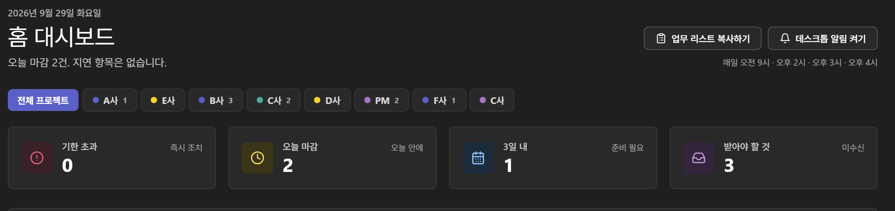
확대네 갈래 분류와 알림 시각 — 마감이 있는 항목은 기한 초과 · 오늘 마감 · 3일 내 · 받아야 할 것으로 자동 분류됩니다.
오른쪽 위 버튼 아래의 "매일 오전 9시 · 오후 2시 · 오후 3시 · 오후 4시"가 Teams로 알림이 나가는 시각입니다.
받아야 할 것 — 내 할 일이 아니라 고객사 회신 · 자료를 기다리는 항목을 별도 갈래로 분리
오늘의 정기 업무 — 일 · 주 · 월 주기 업무를 대시보드에서 바로 체크, 연속 달성 · 누락 추적
PM Station
11
PM STATION · 화면 02
누가 언제 무엇을 끝내는지
WBS · 간트 / 프로젝트 상세
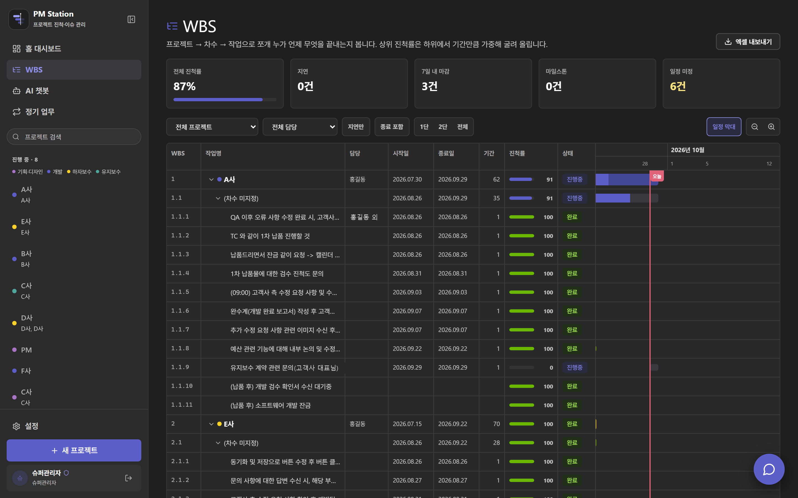
전체 화면WBS · 간트 — 프로젝트 → 차수 → 작업으로 쪼개고, 상위 진척률은 하위 작업에서 기간만큼 가중해 굴려 올립니다.
전체 진척률 · 지연 · 7일 내 마감 · 마일스톤 · 일정 미정을 상단에 두어, 여러 프로젝트의 일정 충돌을 먼저 보게 했습니다.
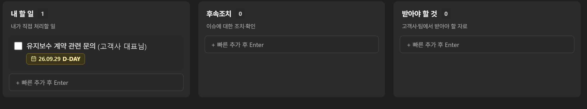
확대프로젝트 상세의 세 레인 — 할 일을 내가 직접 처리할 일 / 이슈에 대한 후속조치 / 고객사 · 팀에서 받아야 할 자료로 분리했습니다.
"받아야 할 것"을 별도 레인으로 세워 두지 않으면 대기 중인 건이 반드시 새기 때문입니다.
WBS는 엑셀로 내보내 고객사 보고에 그대로 쓰고, 여기서 관리하는 할 일과 이슈는 마감일이 있으면 자동으로 알림 대상에 편입됩니다.
일정표와 알림이 다른 문서에 있으면 둘 중 하나는 반드시 낡기 때문에, 같은 데이터를 두 화면으로 보여주는 구조로 잡았습니다.
PM Station
12
PM STATION · 화면 03
앱을 열지 않아도 할 일이 먼저 옵니다
Teams 알림 연동
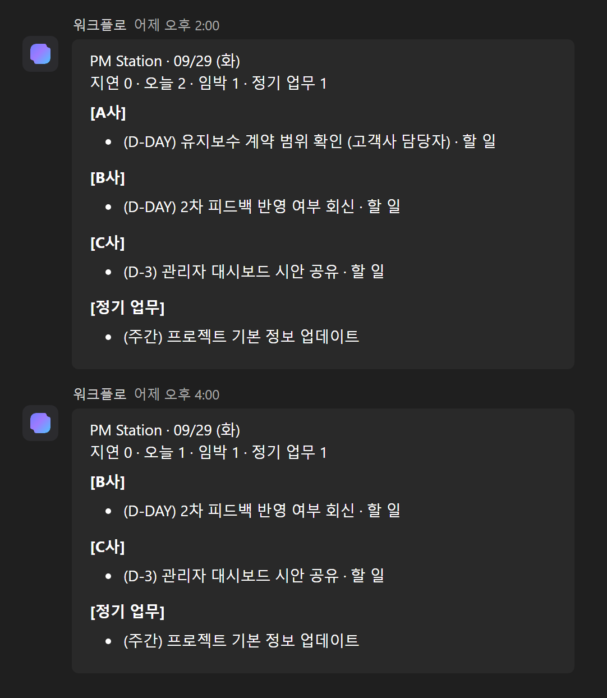
수신Teams 개인 채팅 — 설정한 시각마다 담당 프로젝트별 업무가 지연 · 오늘 · 임박 · 정기 업무 순으로 도착. 이미 끝낸 일은 다음 알림에서 빠짐 (내용은 가상 예시)
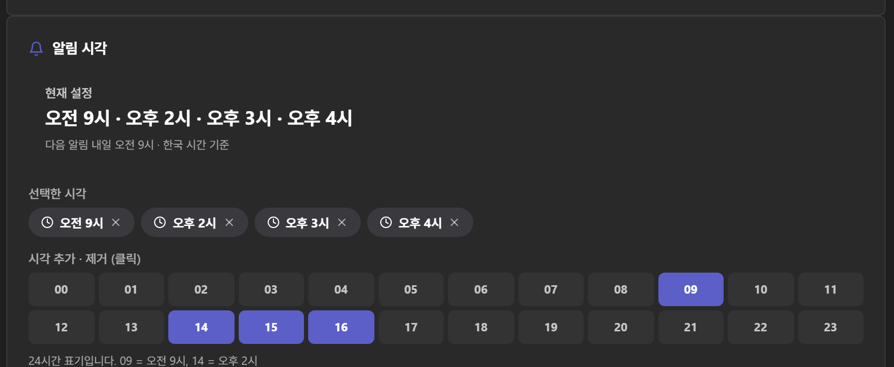
설정알림 시각 복수 선택 — 원하는 시각을 여러 개 고르면 브라우저 · Teams 알림에 함께 적용
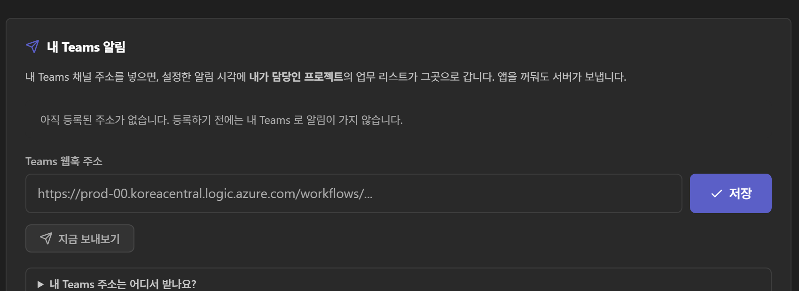
연동채널 주소 등록 — 한 번 등록하면 서버가 보내므로 앱을 꺼 둬도 도착
원하는 시각을 복수로 선택 — 설정한 시각마다 자동 발송
담당 프로젝트 업무만 — 참여 승인된 프로젝트 기준으로 범위를 나눔
열지 않아도 도착 — 대시보드는 열어야 보이지만, 알림은 평소 쓰는 Teams로 바로 도착
동작 흐름
01
알림 시각 복수 선택
02
서버 스케줄러가 시각마다 실행
03
담당 프로젝트의 미완료 업무 집계
04
Teams 개인 채팅 으로 발송
05
끝낸 일은 다음 알림에서 제외
PM Station
13
PM STATION · 화면 04
매일 아침의 구두 보고를 없앤 자리
운영 보고서 자동 발행
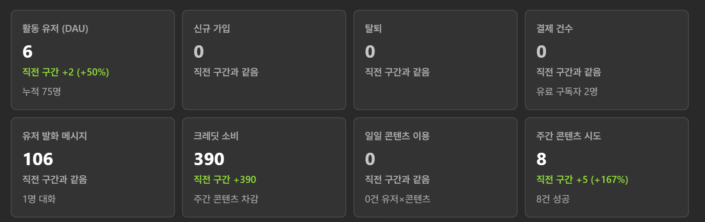
지표지표 12개와 증감 — 직전 보고서 이후 구간을 같은 길이의 직전 구간과 비교해 증감을 함께 표시
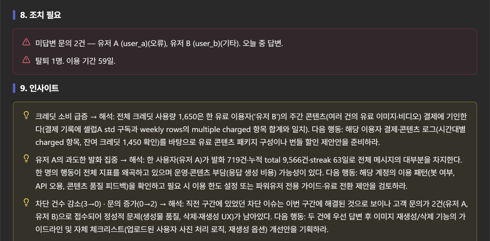
조치 · 인사이트오늘 할 일과 해석 — 당일 처리할 항목을 먼저 띄우고, 지표마다 "해석 → 다음 행동"을 붙임
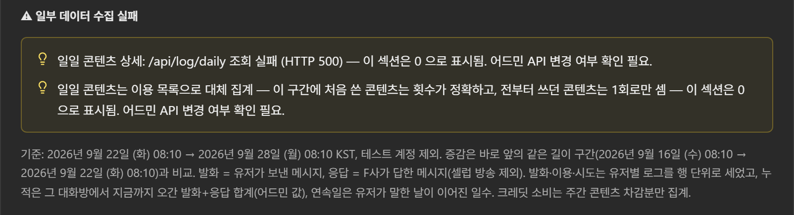
장애 내성일부 수집 실패 표시 — 어드민 API 한 곳이 실패해도 보고서는 멈추지 않고 빈 항목과 확인할 곳을 명시
매일 08:10 자동 발행 — 서버가 어드민 데이터를 읽어 보고서와 PDF를 만들어 기록 탭에 쌓음
지표 → 요약 → 상세 → 조치 필요 → 인사이트 → 집계 기준 순서로 한 건에 정리
매일 약 30분 → 0분 — 관리자 페이지 확인 · 구두 보고 준비가 사라지고 확인과 판단만 남음
사용자 이름 · 아이디는 유저 A~K, 서비스명은 F사로 치환해 촬영
PM Station
14
PM STATION · 화면 05
회의가 끝나면 초안이 먼저 있습니다
AI 회의록
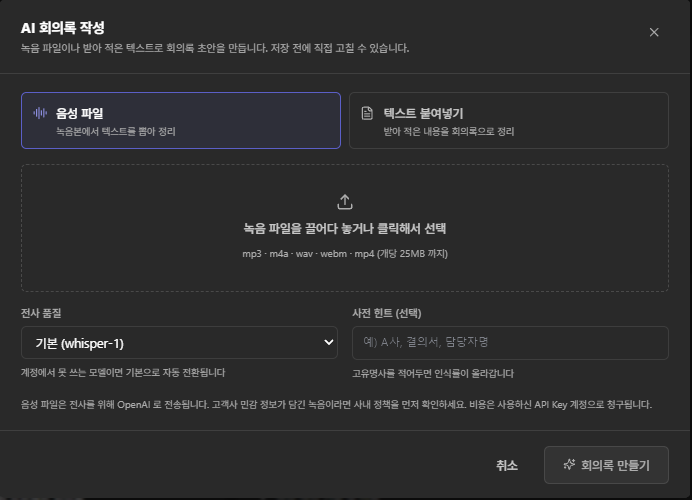
입력녹음 파일 또는 텍스트 — mp3 · m4a · wav 등 녹음본이나 받아 적은 메모 · 문서를 그대로 넣음
결과는 논의 내용 · 결정 사항 · 후속 조치 · 확인 필요로 나누어 작성
원문을 함께 저장하고, 원문 안에서 키워드 검색 → 해당 줄로 바로 이동
녹취에 없는 내용은 쓰지 않도록 규칙화 — 초안과 원문을 대조해 확인
회의록 작성 15~20분 → 1분 내외 (예시는 가상의 회의 내용으로 생성)
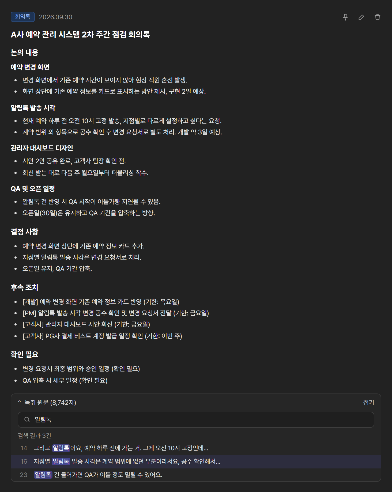
결과생성된 회의록 — 논의 내용 · 결정 사항 · 후속 조치 · 확인 필요로 구분, 아래에 원문과 키워드 검색 (내용은 가상 예시)
동작 흐름
01
녹음 파일 또는 텍스트 · 문서 입력
02
음성은 전사 (Whisper)
03
논의 · 결정 · 후속 조치 · 확인 필요로 정리
04
저장 전 직접 수정
05
원문 보관 · 키워드 검색
PM Station
15
PM STATION · 화면 06
매뉴얼을 찾지 않고 물어봅니다
AI 챗봇 (사내 문서 기반)
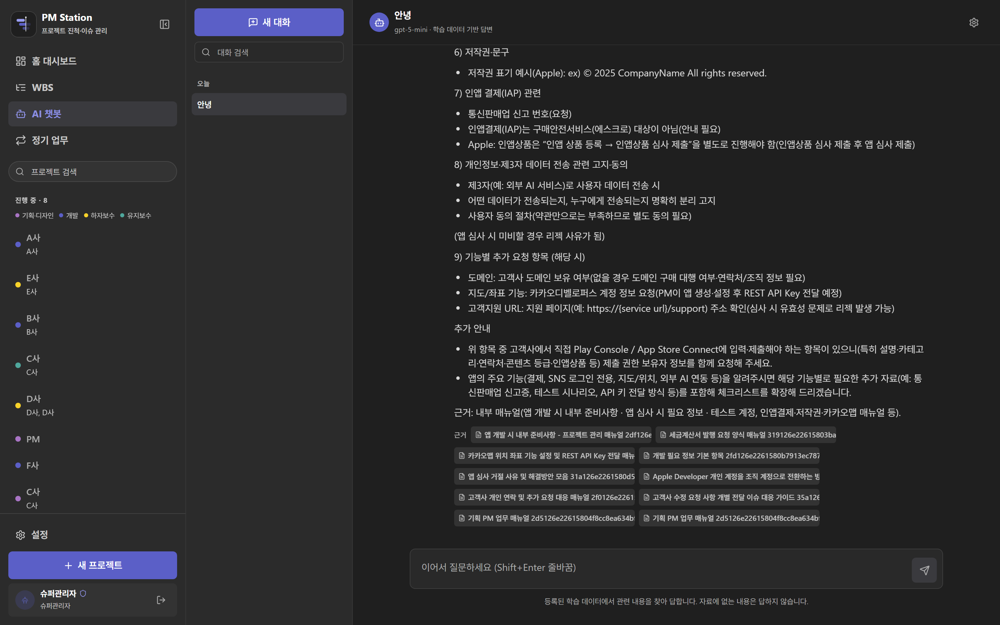
전체 화면AI 챗봇 — 매뉴얼화한 사내 문서를 학습 데이터로 올려, 앱 심사 준비물이나 세금계산서 양식 같은 질문에 항목별로 정리해 답합니다.
과도기에 Claude AI의 'PM' 프로젝트로 쓰던 문서 검색 방식을 시스템 안의 기능으로 흡수한 부분입니다.
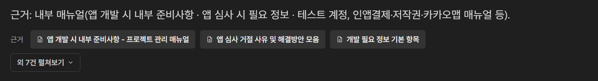
확대근거 문서 표시 — 답변 아래에 어느 매뉴얼에서 나온 내용인지 근거 문서를 붙여 보여줍니다.
화면 맨 아래 안내처럼 등록된 학습 데이터에 없는 내용은 답하지 않도록 제한해, 업무에 쓸 수 없는 그럴듯한 답을 막았습니다.
PM Station
16
PM STATION · 화면 07
누가 언제 무엇을 바꿨는지
변경 이력
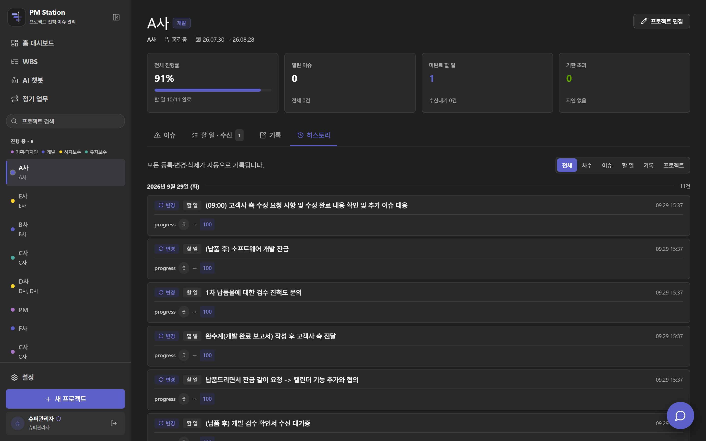
전체 화면변경 이력 — 등록 · 변경 · 삭제가 DB 트리거로 자동 기록됩니다. 어떤 할 일의 진척률이 언제 0에서 100으로 바뀌었는지까지 남아,
"그때 일정이 왜 바뀌었죠?"에 근거로 답할 수 있습니다. 차수 · 이슈 · 할 일 · 기록 · 프로젝트별로 걸러 봅니다.
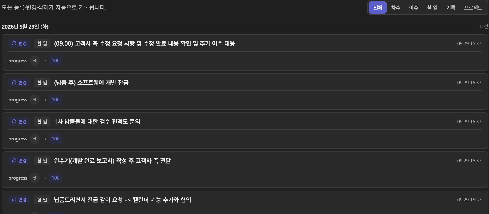
확대변경 목록 — 항목마다 무엇이 어떤 값에서 어떤 값으로 바뀌었는지(예: progress 0 → 100)와 시각이 남습니다. 오른쪽 위에서 차수 · 이슈 · 할 일 · 기록 · 프로젝트별로 거를 수 있습니다.
무엇이 남는가
누가 · 언제 · 무엇을 — 할 일 · 이슈 · 차수 · 기록 · 프로젝트의 등록 · 변경 · 삭제가 사람이 따로 적지 않아도 남습니다.
바뀌기 전과 후 — 진척률 · 기한 · 담당자처럼 바뀐 항목은 이전 값과 이후 값을 함께 보여 줍니다.
보고의 근거 — 일정이 밀린 이유를 기억이 아니라 기록으로 설명할 수 있고, 고객사와 범위를 다툴 때도 근거가 됩니다.
PM Station
17
ClosingAX · AI Transformation
공수가 드는 반복 업무는 시스템이 맡고, 사람은 사람만 할 수 있는 일에 집중하게 만들겠습니다.
도메인이 전혀 다른 수많은 고객사의 SI 프로젝트에서 늘 그들이 어떻게 일하는지, 어떤 불편함을 겪고 있는지부터 파악해 왔습니다.
새로운 조직에서도 먼저 현업을 보고, 시간과 손이 가장 많이 드는 반복 작업부터 걷어내 업무 효율을 끌어올리겠습니다.
01어떻게 일하는지 파악
02공수가 새는 지점 발견
03효과 순으로 우선순위
04동작하는 도구로 자동화
05성과를 측정해 지속 개선 · 확대 적용
Thank you.
김석남AI 서비스 기획 · PM ramseok.github.io · rlatjrska1674@gmail.com